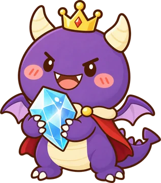

コードの力で、ボスに いちばんダメージを あたえよう！
カードを ならべて プログラムを作り、自分のキャラを動かして こうげき。手札も ボスの動きも ぜんぶ見えているから、先を読んで作戦を立てよう。
- じゅんばん（順次）
- くり返し
- もし〜なら（条件分岐）
- 関数
- デバッグ

1. 何人で あそぶ？
2. なまえと キャラクター
3. ボスを えらぶ
4. ラウンド数
ボスのつぎの攻撃範囲プログラムを動かした後の位置（よそう）
カードを ならべて プログラムを作り、自分のキャラを動かして こうげき。手札も ボスの動きも ぜんぶ見えているから、先を読んで作戦を立てよう。
